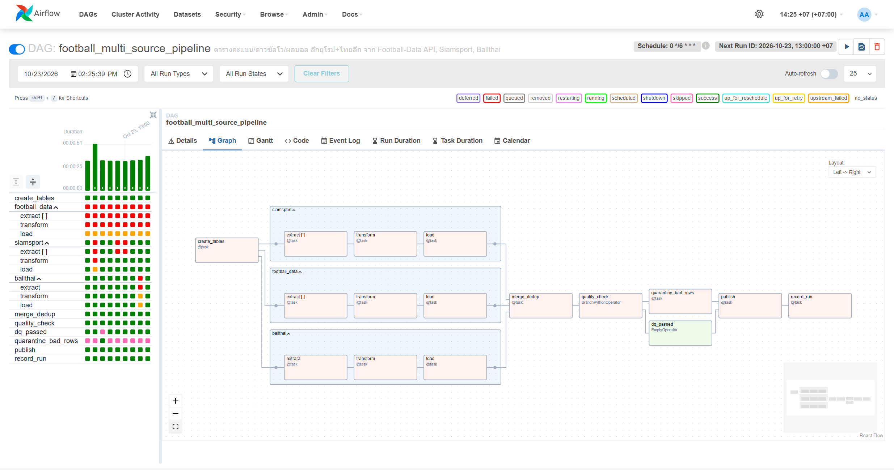
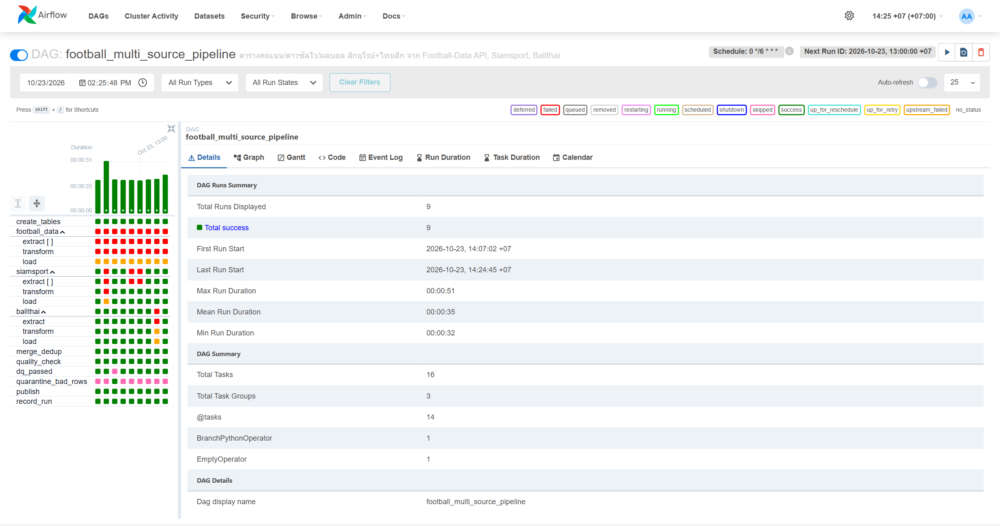
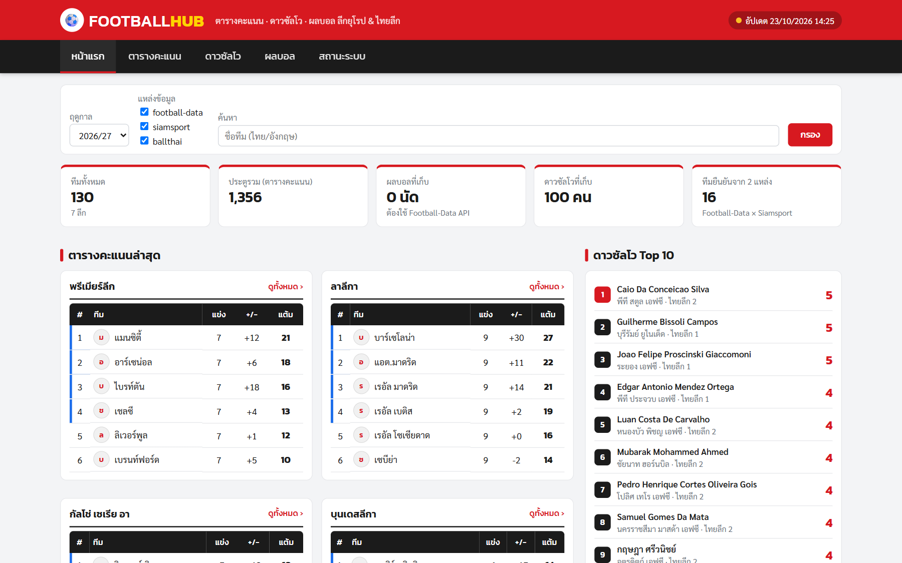
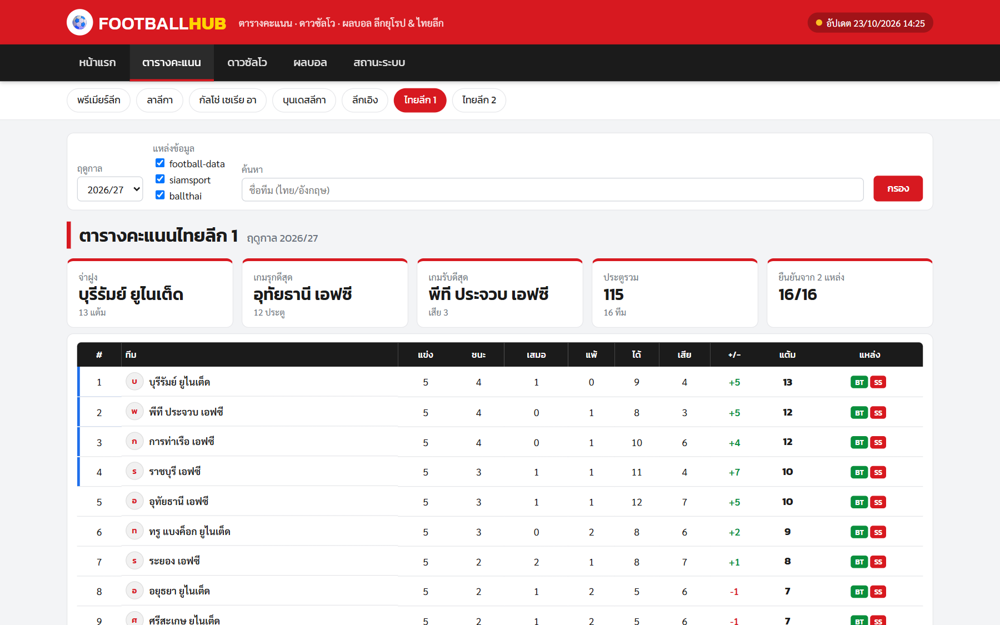
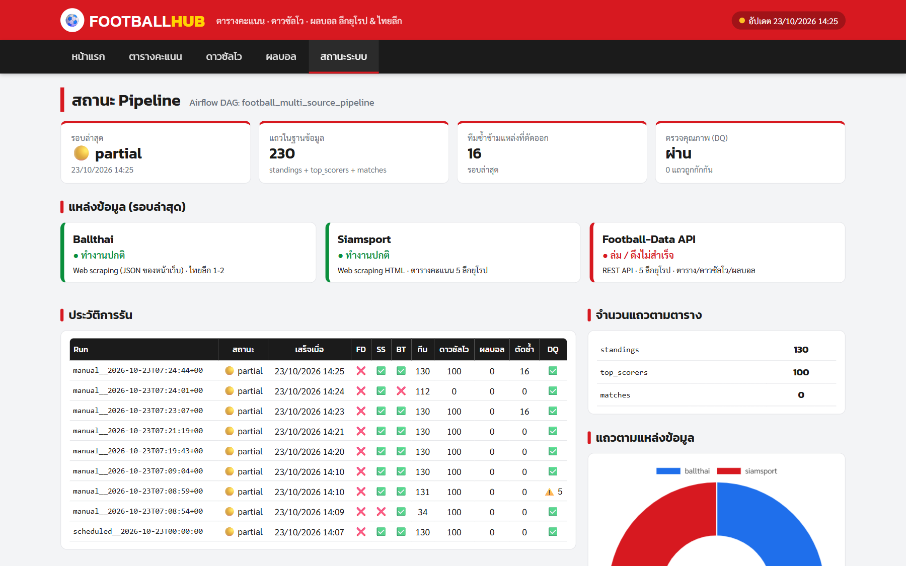

แหล่งข้อมูล 3 แหล่ง:
(1) Football-Data API (REST, ต้องใช้ API key): ตารางคะแนน ดาวซัลโว และผลการแข่งขันของ 5 ลีกใหญ่ยุโรป;
(2) Siamsport: web scraping ตาราง HTML <table> ด้วย requests + BeautifulSoup ได้ตารางคะแนน 5 ลีกยุโรปและไทยลีก 1 (ชื่อทีมภาษาไทย);
(3) Ballthai: หน้าเว็บโหลดข้อมูลด้วย JavaScript จึงดึง JSON endpoint ที่หน้าเว็บเรียกใช้ด้วย requests (ไม่ใช้ Selenium) ได้ตารางคะแนนและดาวซัลโวไทยลีก 1–2.
ตรวจ robots.txt แล้ว ทั้งสองเว็บอนุญาตทั้งหมด ระบบเว้นช่วงระหว่าง request และไม่เก็บข้อมูลส่วนบุคคล (ไม่มีวันเกิดและรูปภาพ) ตาม PDPA
| ระดับ | สิ่งที่ทำได้ | ผล |
|---|---|---|
| ระดับ 1 ขั้นต่ำ | DAG extract → transform → load เก็บลง PostgreSQL แล้วแสดงบนเว็บเป็นตารางและกราฟ | ผ่าน |
| ระดับ 2 มาตรฐาน | 3 แหล่งรันขนานกันใน TaskGroup ของแต่ละแหล่ง แปลงเป็น schema เดียวกัน (league_code, season, team, played, won, draw, lost, gf, ga, gd, points) และใช้ UPSERT (INSERT … ON CONFLICT DO UPDATE) จึงรันซ้ำแล้วจำนวนแถวไม่เพิ่ม (ทดสอบแล้ว 130/100 แถวเท่าเดิม) เว็บมี KPI และตัวกรองฤดูกาล แหล่งข้อมูล และการค้นหาทีม/นักเตะ | ผ่าน |
| ระดับ 3 ท้าทาย | • แหล่งล่มแล้วไปต่อได้: merge_dedup ตั้ง trigger_rule=all_done และอ่านเฉพาะแถวของ run_id รอบนี้ (ทดสอบด้วย conf {"fail_sources":["siamsport"]})• ตัดรายการซ้ำข้ามแหล่ง: ไทยลีก 1 มีทั้งใน Ballthai และ Siamsport (ลีกยุโรปมีทั้งใน Football-Data และ Siamsport) แต่ชื่อทีมเขียนไม่ตรงกัน เช่น "พีที ประจวบ เอฟซี" / "ประจวบ เอฟซี" และ "Man City" / "แมนซิตี้" จึงจับคู่ตามลำดับ: ตาราง team_alias → ชื่อตรงกันหรือชื่อหนึ่งอยู่ในอีกชื่อ → สถิติตรงกันทุกค่า → อันดับ+แต้ม แล้วรวมเป็นแถวเดียว (ทดสอบแล้ว: ไทยลีก 1 ตัดซ้ำได้ครบ 16 ทีม จำนวนแถวไม่เพิ่ม และเมื่อ Ballthai ล่มก็ยังใช้ key เดิม)• ตรวจคุณภาพแล้วแตกเส้นทาง: quality_check (BranchPythonOperator) ตรวจว่าแข่ง = ชนะ+เสมอ+แพ้, ผลต่างประตูถูกต้อง, ไม่มีค่าติดลบ, แต้ม ≤ 3×แข่ง, สกอร์ไม่ว่าง และรวม ≥ 100 แถว ถ้าผ่านไป dq_passed ถ้าไม่ผ่านไป quarantine_bad_rows ซึ่งย้ายแถวเสียไปตาราง dq_quarantine แล้ว publish เฉพาะแถวที่ผ่าน | ผ่าน |
| โบนัส | ทำทั้งสองอย่าง: Dynamic Task Mapping (extract.expand(league_code=[5 ลีก])) และหน้าสถานะ pipeline บนเว็บ (/pipeline) | ผ่าน |
Stack: Docker Compose · Airflow 2.10.4 (LocalExecutor) · PostgreSQL 16 แยกฐาน metadata กับฐานข้อมูลฟุตบอล · เว็บ Flask + Chart.js ที่ query PostgreSQL โดยตรง (5 หน้า: หน้าแรก/ตารางคะแนน/ดาวซัลโว/ผลบอล/สถานะระบบ) · ข้อมูลรวม __ROWS__ รายการ





ปัญหา 1: ชื่อทีมภาษาไทยจาก Siamsport กลายเป็นตัวอักษรเพี้ยน
อาการ: ข้อมูลที่ scrape ได้แสดงชื่อทีมเป็น à¹à¸¡à¸à¸... แทน "แมนซิตี้" หาสาเหตุ: ตรวจ response.headers และ response.encoding แล้วพบว่าเว็บไม่ส่ง charset มา requests จึงเดา encoding เป็น ISO-8859-1 วิธีแก้: ใช้ response.content.decode("utf-8") ก่อนส่งให้ BeautifulSoup แล้วทดสอบใหม่ ได้ชื่อไทยถูกต้อง
ปัญหา 2: หน้า Ballthai ไม่มีข้อมูลในไฟล์ HTML (แสดงแค่ "Loading...")
อาการ: HTML ที่ดึงมามีแต่ <div class="standing-json-block" data-league="t1">Loading... หาสาเหตุ: เปิดไฟล์ JS ของหน้าเว็บ (standings_json.js, topscorers_json.js) แล้วพบว่าข้อมูลถูกโหลดภายหลังด้วย fetch() จาก svc.ballthai.com/api/... วิธีแก้: โจทย์ห้ามใช้ Selenium จึงเรียก JSON endpoint เดียวกันด้วย requests (หลังตรวจ robots.txt) และเลือกเฉพาะ stage ของฤดูกาลปัจจุบัน เพราะ API คืนทั้งฤดูกาลก่อนและฤดูกาลนี้ ทำให้ทีมซ้ำ
ปัญหา 3: task extract ใน TaskGroup ไม่ได้รอ create_tables
อาการ: ใน Graph view เส้นจาก create_tables ชี้ไปที่ load แทนต้น group จึงเสี่ยงที่ extract จะรันก่อนสร้างตาราง หาสาเหตุ: ฟังก์ชัน @task_group ที่ return ค่า (XComArg ของ load) ทำให้ >> ผูกกับ task นั้นแทน group วิธีแก้: ให้ group ไม่ return ค่า เพื่อให้ dependency ผูกกับทั้ง group แล้วตรวจ Graph view ซ้ำ
ปัญหา 4: task ไทยลีกของ Siamsport fail แม้แก้โค้ดแล้ว
อาการ: หลังเพิ่มไทยลีก 1 ใน Siamsport, task siamsport.extract[5] fail และ dedup_removed = 0 หาสาเหตุ: เปิด log ของ task ใน logs/…/map_index=5 พบ KeyError จากโค้ดเก่า เพราะ LocalExecutor fork task จาก scheduler ที่ยัง cache โมดูลเดิมอยู่ หลัง restart ก็ยังเจอ AttributeError: 'NoneType'… group เพราะโลโก้ทีมไทยใช้ชื่อไฟล์แบบ uuid ไม่ใช่ตัวเลข วิธีแก้: restart scheduler หลังแก้ไฟล์ helper และแก้ regex ให้รับชื่อไฟล์ทุกแบบ จากนั้นจับคู่ได้ครบ 16 ทีม
ปัญหา 5: Football-Data ตอบ 403 และจำกัดที่ 10 requests/นาที
อาการ: เรียก API แล้วได้ 403 restricted และเมื่อ 5 ลีกรันขนานกันก็เสี่ยงโดน 429 หาสาเหตุ: อ่านข้อความ error และเอกสาร free tier วิธีแก้: อ่าน API key จาก .env (ไม่ commit), ตั้ง max_active_tis_per_dagrun=1 กับ sleep 6.5 วินาที และ retry เมื่อได้ 429 ส่วนกรณีไม่มี key แหล่งนี้จะ fail แต่ DAG ยังรวมอีก 2 แหล่งต่อได้ ซึ่งเป็นตัวอย่างของระดับ 3
| เวลา | งาน |
|---|---|
| 13:00–13:35 | อ่านโจทย์และเกณฑ์คะแนน สำรวจแหล่งข้อมูล (robots.txt, โครงสร้าง HTML, หา JSON endpoint ของ Ballthai) และทดสอบว่า Football-Data ต้องใช้ key |
| 13:35–13:45 | เขียนฟังก์ชัน extract/transform ของ 3 แหล่ง แยกไว้ในไฟล์ football_sources.py เพื่อทดสอบนอก Airflow ได้เร็ว |
| 13:45–13:50 | เขียน DAG และ docker-compose รันครั้งแรกให้ผ่านระดับ 1–3 ทดสอบ UPSERT/แหล่งล่ม/DQ แล้ว commit + push ทันที เพื่อมีงานส่งไว้ก่อน |
| 13:50–14:05 | ปรับเว็บ dashboard เป็นเมนูแบ่งหน้า เอารหัสผ่านออกจาก compose ให้อ่านจาก .env และทดสอบแบบอาจารย์ (clone ใหม่ → cp .env.example .env → docker compose up) |
| 14:05–14:25 | เก็บภาพ เขียน PDF และเพิ่มตารางไทยลีก 1 จาก Siamsport เพื่อให้มีข้อมูลซ้ำข้ามแหล่งจริง (Ballthai × Siamsport) โดยไม่ต้องพึ่ง API key |
| 14:25–16:00 | ทดสอบกรณีแหล่งล่ม/ตัดซ้ำซ้ำอีกรอบ อัปเดตภาพและ PDF ตรวจรายการส่งงาน และ commit ก่อน 16:00 |
หลักการจัดลำดับ: ทำตามคะแนนจากมากไปน้อย (ระดับ 1: 30 → ระดับ 2: 20 → ระดับ 3: 15 → โบนัส) ให้ระบบรันได้ end-to-end ก่อนค่อยปรับเว็บให้สวย และ commit เป็นระยะเพราะนับเฉพาะ commit ก่อน 16:00
งานที่ตัดออกและเหตุผล: • ไทยลีก 3 แบ่งหลายโซน ทำให้โครงสร้างข้อมูลซับซ้อน แต่ไม่เพิ่มคะแนน • โปรแกรมแข่ง (fixtures) ของ Ballthai เป็นนัดที่ยังไม่แข่ง ไม่มีสกอร์ จึงไม่ตรงขอบเขตผลประตู • โลโก้ทีม เพื่อเลี่ยงการ hotlink รูปที่มีลิขสิทธิ์ • CeleryExecutor/Redis ใช้ LocalExecutor แทน เพราะเพียงพอสำหรับงานนี้และเครื่องอาจารย์รันได้เร็วกว่า • Streamlit เปลี่ยนเป็น Flask เพื่อทำเมนูและดีไซน์ได้ตามต้องการ